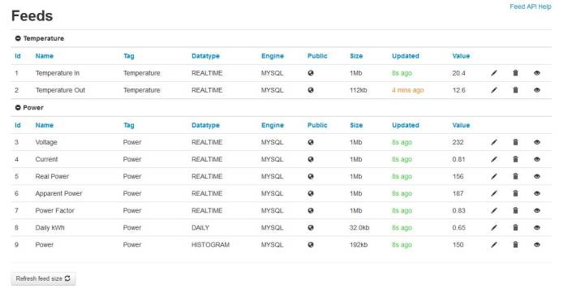
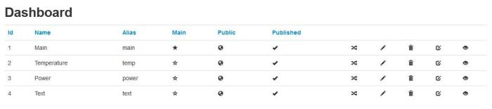
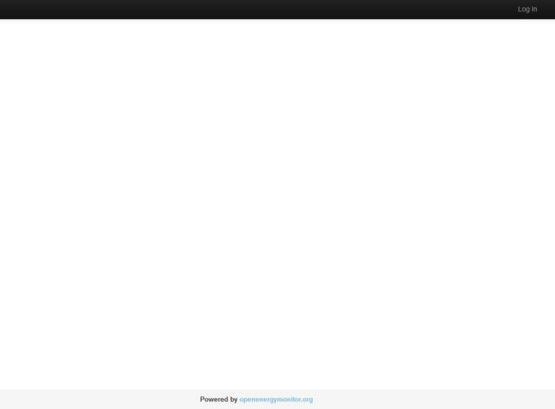

Hi, I have this problem in internal installation Rpi, I can see the dashboard only if I'm logged, without login i can't see the "solare" dashboard
this is my address
http://casamaurolaura.dyndns.org/emoncms/dashboard/view/solare
can I see this dashboard without login?
thansk
Re: SOLVED: dashboard in local only displays if I am logged on
Have you set your 'feeds' to public, and your dashboards to 'public' and 'published'?
View your dashboard by visiting http://casaml.dyndns.biz/emoncms/your_username
Paul
Re: SOLVED: dashboard in local only displays if I am logged on
yes, I have all feeds public, so I see only if I'm login
this is a new address
http://casaml.dyndns.biz/emoncms/dashboard/view/solare
Re: SOLVED: dashboard in local only displays if I am logged on
Please read my post above again!
Paul
Re: SOLVED: dashboard in local only displays if I am logged on
yes all feed is setting "public" and all dashboard is setting "public"
http://casaml.dyndns.biz/emoncms/dashboard/view/solare
I see only black top-bar
I have this image on Rpi http://emoncms.org/site/docs/raspberrypiimage
Re: SOLVED: dashboard in local only displays if I am logged on
Please read my post above again!
Paul
Re: SOLVED: dashboard in local only displays if I am logged on
ook now is ok, thanks
Re: SOLVED: dashboard in local only displays if I am logged on
I have an identical problem.
I have a working emoncms v 5.0 on RasberryPi. All dashboards (and feeds of course) are public and visible when I'm not logged in.
I have installed emoncms v 6.0 on an Ubuntu server, set engine to MySQL and copied MySQL database. It works fine, everything is as expected. However, public dashboards are not visible when I'm not logged in.
Both dashboards and feeds are public and published - see attached images - this is how it is set also on RPI.


To conclude, public dashboards in v6 are not visible when user is not logged in.
Re: SOLVED: dashboard in local only displays if I am logged on
To confirm, public dashboards in V6 are visible when the user is not logged in, provided the settings are set up correctly, and you are using the correct URL to access it.
Please run through the checklist that I wrote in this post.
Let us know how you get on.
Paul
Re: SOLVED: dashboard in local only displays if I am logged on
Feeds Public: YES - see the image above
Dashboards Public: YES - see the image above
Dashboards Published: YES - see the image above
Dashboard url: /emoncms/username/dashboardalias (according to http://emoncms.org/site/docs/dashboards)
I get empty page with the option to log in.

Please note that the same settings on v5 (running on RPI) work as expected!
Re: SOLVED: dashboard in local only displays if I am logged on
You're not using the same URL format as I put in my checklist!
Paul
Re: SOLVED: dashboard in local only displays if I am logged on
Dashboard url /emoncms/username generates the same output.
Re: SOLVED: dashboard in local only displays if I am logged on
Igor, PM me your URL and username & I'll take a look.
Re: SOLVED: dashboard in local only displays if I am logged on
Sent, thanks!
Re: SOLVED: dashboard in local only displays if I am logged on
Solved the problem!
In fact the problem was undocumented feature.
Public dashboards do not work with the "admin" user.
Modified teh index.php fiel and now IT WORKS!
Re: SOLVED: dashboard in local only displays if I am logged on
Firstly sorry for the language can not be right.
I have emoncms v6 in my local installation with raspberry and hdd 2.5 ", i have all feeds and dashboard settings in public and dashboard published and only I can see if I am logged on.
In my emoncms.org is run ok.
I have apparently the same problem as "Funa" but I can not understand what was the solution.
Can you help me understand?
Thank you.
Re: SOLVED: dashboard in local only displays if I am logged on
Moix try changing the username of your admin user to another name, I keep forgetting about this when creating default users.
Re: SOLVED: dashboard in local only displays if I am logged on
Hello again, I had already tried this option and come back to read again the post I have realized my stupid mistake entering the IP address which did not indicate the user name if not only "my ip /emoncms /dashboard /view "
Thanks for your time.
Re: SOLVED: dashboard in local only displays if I am logged on
Paul,
Earlier in this thread you wrote
That reminded me of something I'd read in the emoncms docs:
Dashboard configuration
Each dashboard can have a human readable name a menu alias, and a description and can
be a main dashboard a published dashboard and a public dashboard.
A main dashboard is the equivalent to the front page when you'r in run mode.
A published dashboard is a daschboard that you have finished editing but is not public.
A public dashboard is a dashboard that you choose to share publicly via your username
to the web.
These options are set by clicking on the configure button in the editor:
The line about published dashboards says not public. (I copied it straight from the page, hence
the misspelled words)
Typo error, or the word 'not' in the wrong place in the sentence?
Regards,
Bill
Re: SOLVED: dashboard in local only displays if I am logged on
Thanks Bill, it is confusing! so I've reworded the sentence to read;
'A published dashboard is a dashboard that you have finished editing and is publicly visible.'
Hope that it is clearer.
Paul